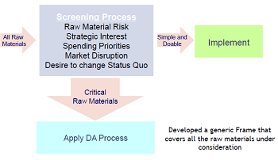
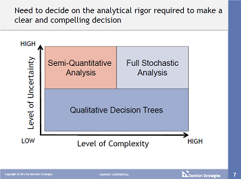

| ||
Knowledge Content LibraryDecision Analysis Applied to Volumes of DecisionsPresneted by Paul Wicker, Decision Strategies If you have a thousand decisions to make, how do you decide what level of DA or analytical rigor each decision should receive? Decision Strategies recently addressed this issue with the purchasing department of a client that was challenged by their Board to add more strategic thinking and DA to their day-to-day decision-making processes. This was daunting; purchasing organizations are faced with hundreds of decisions as markets, supply, demand and order volumes fluctuate. The method developed can be used as a model for applying a DA approach to large volumes of decisions. The first step of the triage process was to develop an effective screening method (Figure 1). Beyond mere financial metrics, the client was interested in which raw materials were critical to corporate success and which held strategic interest. Once the critical raw materials were filtered from the larger volume, the client had reduced the number of decisions to be made from thousands to hundreds, but an efficient and easy to apply process was still essential. The next step was to develop and apply a Generic DA Frame to each raw material. Using this frame, a team can quickly select two or three good strategic alternatives and tailor these into specific raw material Strategies for evaluation. Based on the level of uncertainty and complexity, three levels of evaluation are possible (Figure 2). At the most basic level of complexity, a qualitative decision tree analysis can provide further insight into the best alternative. For a more complex decision, a semi-quantitative analysis using a multi-attribute assessment is recommended. A full stochastic analysis is still required to resolve the truly complex decisions. Once a Strategy has been selected, information from the analysis is used to create risk mitigation plans with "Signposts". The evaluation should reveal situations and combinations of uncertainties where a different strategy would be preferred. For those cases, the team discusses what can be done to mitigation the risk or exposure and what signpost signifies that the unfavorable event is occurring. For example, a long or short market could cause the purchasing team to make a different strategic decision concerning a raw material. In a long market, they would like freedom to explore pricing options with several suppliers; in a short market, the purchasing group would like to lock in a supplier to have security of supply. The risk would manifest itself as being in a long term contract at high prices during a long market. Risk mitigation might include making sure contract language stipulates market-based pricing or an escape clause. A signpost to watch for would be the market supply situation. By applying an initial filter to the overwhelming volume of decisions and subsequently applying an efficient DA process to the critical raw materials has dramatically improved the strategic thinking within the client's purchasing group. They can now make more confident decisions and take advantage of savings in the market knowing that they have a fully considered risk mitigation plan with signposts. Keywords: framing framestruc | ||